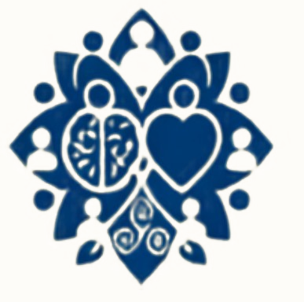
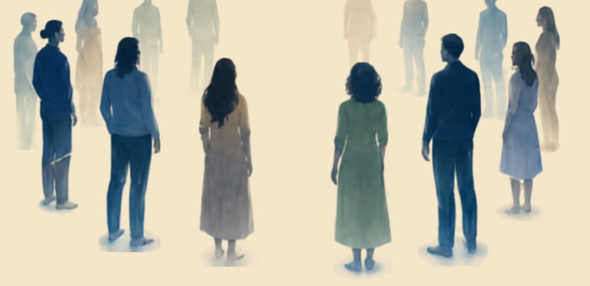
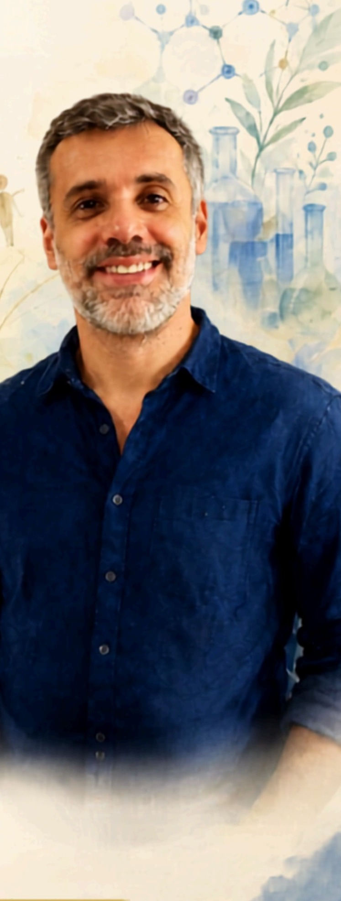

Fundamentos Sistêmicos
- História da Constelação
- Campo Morfogênico
- Níveis de Consciência
- Leis e Ordens Sistêmicas
- Ordens do Amor
- Tipos de Constelação

Turma única de 2026 · Vagas limitadas
Fundamentos e práticas da Constelação Familiar em 6 meses de formação online ao vivo, teoria, vivências e certificação para atuar com ética e presença.
@ancestralidadeconsciente
Início em 26/08/2026 · Inscrições até 20/08 ou enquanto houver vagas

Descrição geral
Uma formação que integra teoria, prática e autoconhecimento para ampliar a compreensão sobre as dinâmicas familiares e os padrões inconscientes que influenciam nossas escolhas e relacionamentos. Ao longo do curso, os participantes desenvolverão uma visão sistêmica e os recursos necessários para conduzir processos com ética, presença e responsabilidade.
Para quem deseja iniciar uma nova carreira profissional, ampliar seus recursos terapêuticos ou aprofundar o próprio processo de autoconhecimento.
Não é necessário ter experiência prévia em Constelação Sistêmica
@ancestralidadeConsciente
Farmacêutico, Mestre em Ciências e Doutorando em Biotecnologia, com trajetória dedicada à pesquisa e à educação.
Constelador Sistêmico, Hipnólogo Clínico e Instrutor de Breathwork certificado como Terapeuta Alternativo pela ABRATH.
Integro ciência, consciência sistêmica e espiritualidade para facilitar processos de autoconhecimento, transformação e reconexão.

Currículo
Compromissos
Esta formação exige presença, responsabilidade e compromisso com o próprio processo.
Informações
R$ 3.200
em até 18x sem juros no cartão de crédito
R$ 2.720 à vista
com 15% de desconto
Condição válida para as inscrições desta turma, até 20/08/2026
Todas as aulas serão gravadas e disponibilizadas integralmente aos alunos.
Certificação mediante frequência mínima de 75%.
Materiais
Apostila em PDF completa
Livros em PDF complementares
Baralho de Cartas Sistêmicas
Constelações realizadas ao longo do curso
Certificado de conclusão de cada módulo
Acesso às gravações de todas as aulas
Transforme conhecimento em consciência e transformação!
Dúvidas
Não. A formação parte dos fundamentos e conduz você, passo a passo, até a prática.
Reserve sua vaga
Deixe seu nome e e-mail: enviamos o programa completo e as condições de inscrição enquanto ainda houver vagas.
Turma única de 2026, com número reduzido de participantes para garantir acompanhamento próximo. As vagas são preenchidas por ordem de inscrição.
Telefone
(38) 9 9948-2501
amoura.ale@gmail.com
Atendimento
Segunda a sexta, das 8h às 18h
@ancestralidadeconsciente
Inscrições até 20 de agosto de 2026 — ou antes, se as vagas se esgotarem.